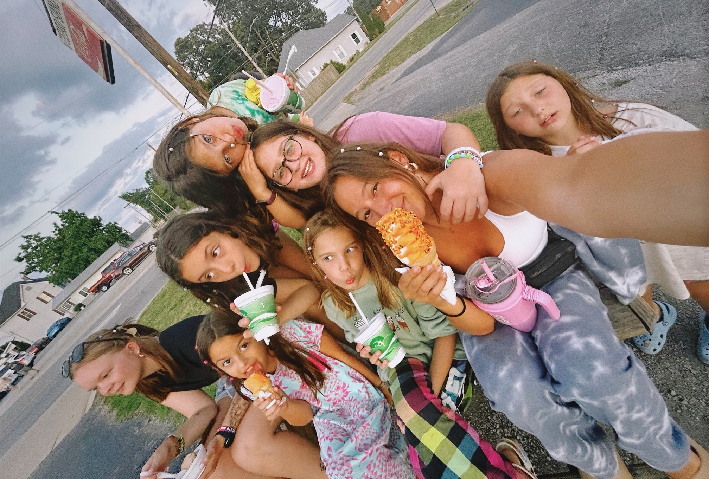
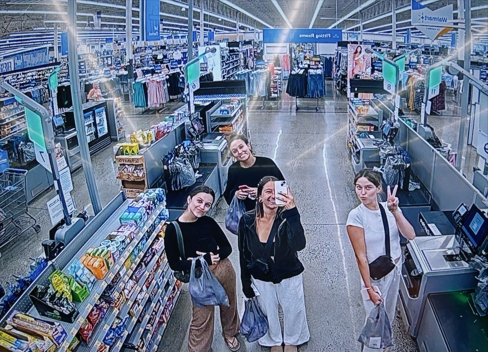
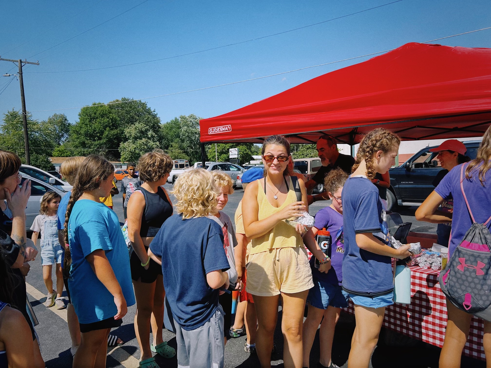
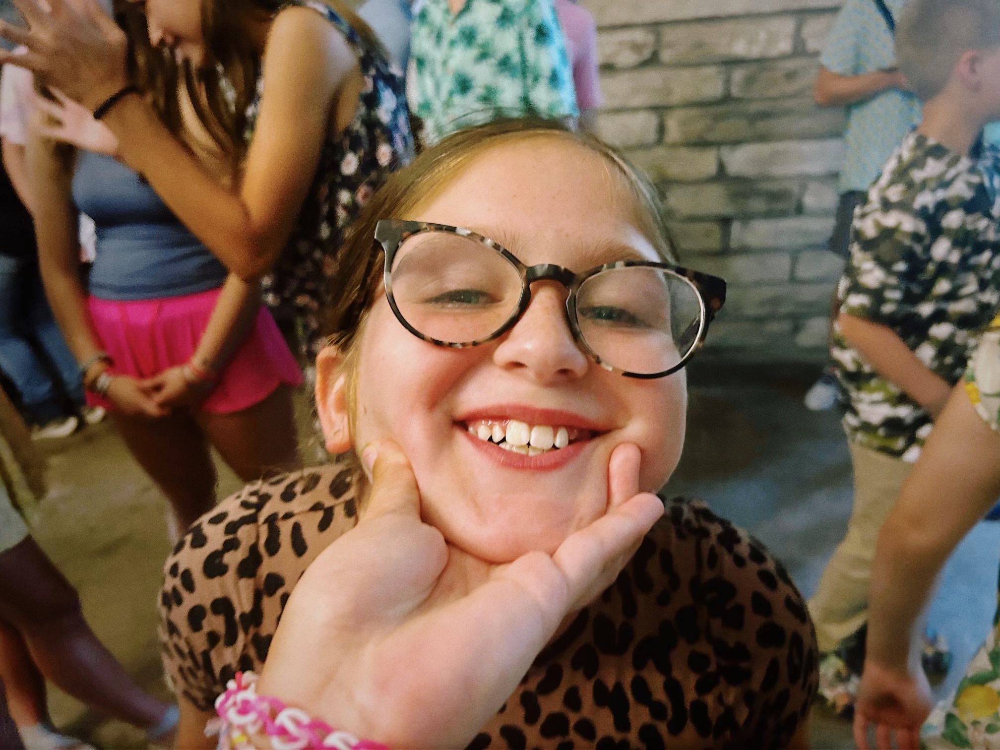
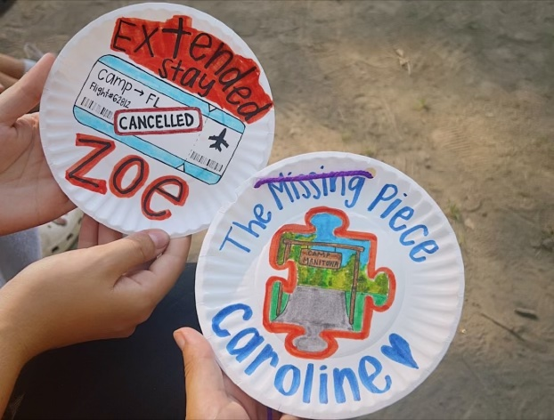

I grew up as a summer camp kid. From family weekends as a child to becoming a camper at the age of seven, I spent part of every summer at camp. Althoguh, at some point, life began to change pace, and I lost sight of the importance of my summer camp experiences. This past summer, I returned back to my roots for the first time in nearly seven years. It was a summer to remember, to say the least.

Caroline Briscoe, right, enjoys a dreamsicle ice cream cone among her campers at The Custard Stand in Sesser, Illinois Sunday, July 9, 2023. After growing up as a camper and relishing her opportunities to go to The Custard Stand, this was Briscoe’s first time back in nearly seven years. She was so excited to be back, and she hoped to make her campers’ experiences just as memorable as her own.

From left to right, Zoe Nolting, Lily Brown, Caroline Briscoe, and Gwen Duplain buy matching pajamas at Walmart in Benton, Illinois Saturday, July 15, 2023. With a population of less than 7000, shopping options in Benton were limited, so Walmart was the one-stop shop for everything during camp. These four girls grew up going to camp together, so they wanted to commemorate being back together.

Zoe Nolting, in the yellow, gets a free hotdog at the Benton, Illinois farmer’s market Thursday, July 20, 2023. As a camper, the farmer’s market was one of Nolting’s favorite activities to sign up for, so she was excited to return as a counselor.

Camper Quinn Rauner, 9, smiles in her counselor’s hand during a song session at week four’s Thursday night dinner July 20, 2023. Rauner spent her entire summer at Camp Manitowa, enjoying five weeks with her counselor, Caroline Briscoe. They created a strong bond.

During the second session paper plate award ceremony at Camp Manitowa July 28, 2023, good friends and previous campers’ Zoe Nolting and Caroline Briscoe reminisce about their time as counselors this summer. Returning to camp as counselors this past summer was a last-minute decision for both girls, but they were both extremely grateful for the experience.